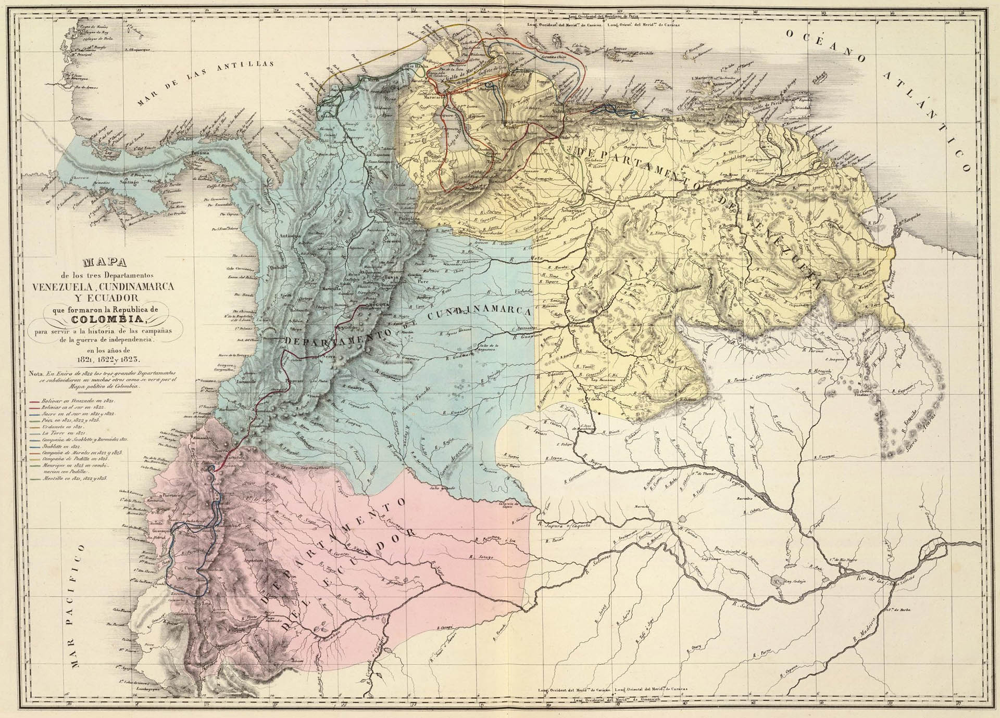
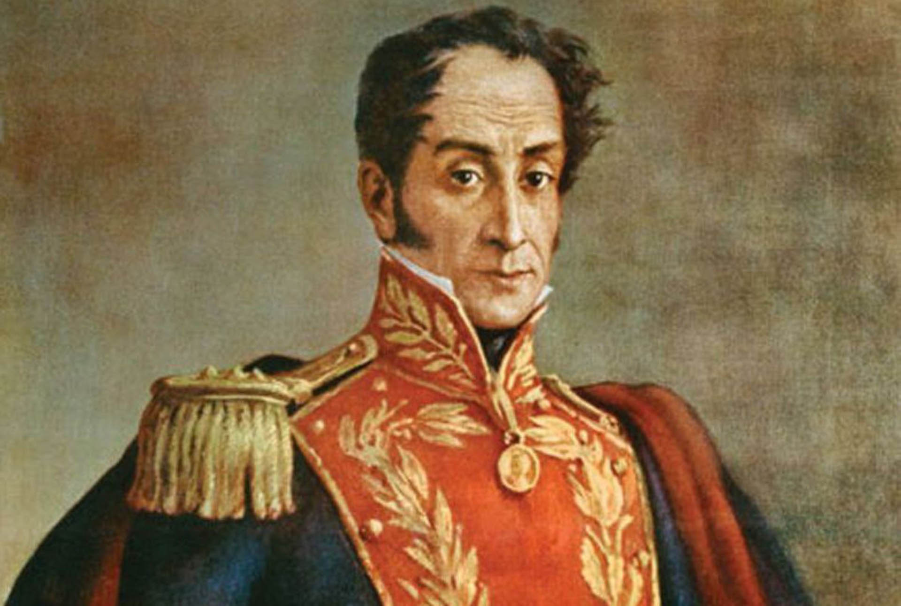
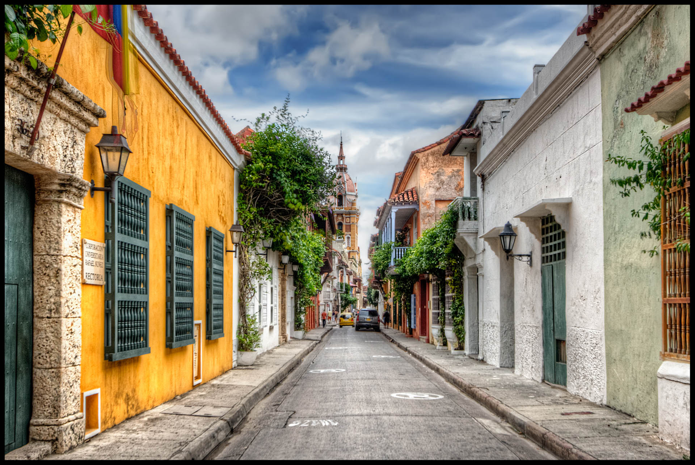
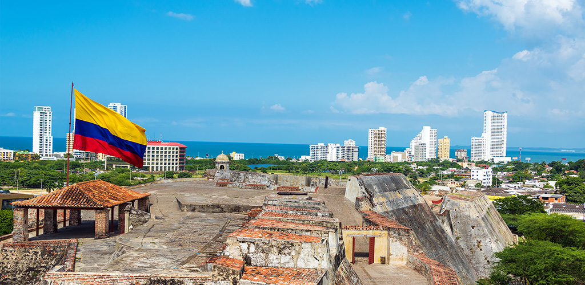
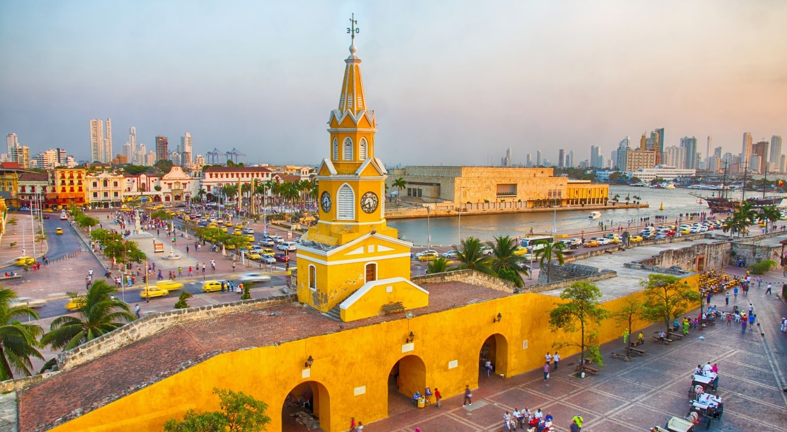
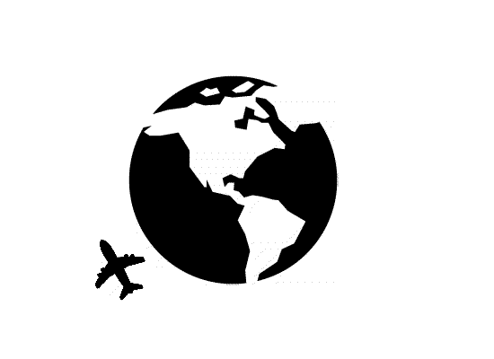

La Gran Colòmbia va ser un país d’Amèrica creat el 1819 pel congrés reunit a la ciutat d’Angostura mitjançant la Llei Fonamental de la República -ratificada després per la seva contrapart reunida a Cúcuta a 1821- per la unió de Veneçuela i la Nova Granada en una sola nació sota el nom de República de Colòmbia.
Simón José Antonio de la Santíssima Trinitat Bolívar Ponte i Palais Blanc, conegut com Simón Bolívar va ser un militar i polític veneçolà, fundador de les repúbliques de la Gran Colòmbia i Bolívia Va ser una de les figures més destacades de l’emancipació americana enfront d’Espanya. Va contribuir a inspirar i concretar de manera decisiva la independència de les actuals Bolívia, Colòmbia, Equador, Panamà, Veneçuela i la reorganització del Perú.
La història del turisme a Colòmbia es remunta al 17 de juny de 1954 amb la creació formal de l’Associació Colombiana d’Hotels a Bucaramanga. El 25 d’octubre de 1955, es va formar l’Associació de Línies Aèries Internacionals a Colòmbia a Bogotà. El 31 d’octubre de 1957 el govern va crear el dia de les bruixetes per Decret 0272. El 1959, l’Alcaldia de Bogotà va crear l’Institut de Cultura i Turisme.
A Colòmbia comença i acaba Sud-amèrica. Entre el càlid Carib i el fred Pacífic s’ha forjat una terra de contrastos que et atraparà sense remei tenia una extensió geogràfica molt més gran que l’actual. Paradoxalment, significava “terra de Cristòfol Colom” (en llatí, Christophorus Columbus), rendint així homenatge al descobridor Va ser el gran líder alliberador, Simón Bolívar, qui va proposar als assistents al Congrés d’Angostura (1819) que fos Colòmbia el nom atorgat a un país que aleshores contractat per la corona espanyola, de la qual s’havia independitzat en 1810.
En qualsevol cas, l’herència colonial va quedar enrere i, avui dia, quan el viatger visita Colòmbia es troba amb un país modern on l’economia porta anys creixent a molt bon ritme, ajudada per la inversió estrangera, que torna a un país políticament estabilitzat.
  